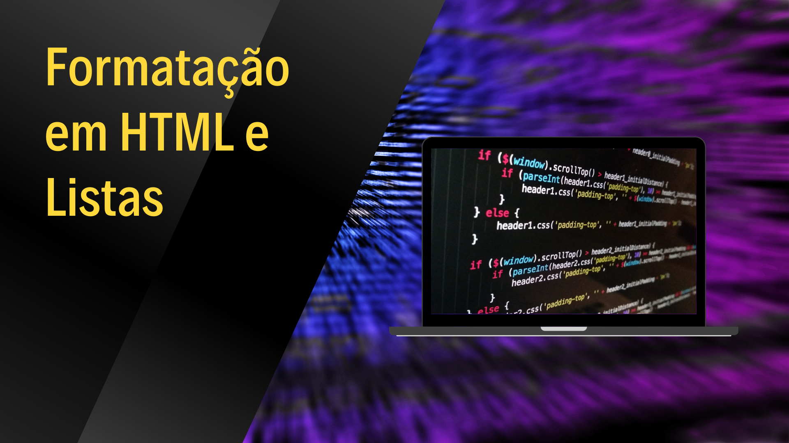

Aula 04 - Formatação em HTML e Listas
Postado por Monica Lima de Paiva
postado em 23 de Outubro de 2022

Negrito
Tags <b> ou <strong>
Texto normal texto em negrito
Texto normal texto em negrito
Itálico
Tags <i> ou <em></em>
Texto normal texto em italico
Texto normal texto em itálico
Destacado
Tag <mark>
Texto normal texto em marcado
Diminuto
Tag <small></small>
Texto normal texto menor
Tachado
Tag <del></del>
Texto normal texto tachado
Sobrescrito ou subscrito
Tags <sup> para sobrescrito e <sub> para subscrito.
Texto normal texto sobrescrito e texto subscrito
Listas
Utilizam-se as tags <ul> para listas não ordenadas e a tag <ol>
para listas ordenadas. As tags <li> para cada elemento.
<ol type="A"><li>Café</li><li>Chá</li><li>Leite</li></ol>- Atributos das listas numéricas no HTML
- Os itens serão numerados por algarismos arábicos (1)
- Os itens serão numerados pelas letras maiúsculas do alfabeto (A)
- Os itens serão numerados pelas letras minúsculas do alfabeto (a)
- Os itens serão numerados por algarismos romanos maiúsculos (I)
- Os itens serão numerados por algarismos romanos minúsculos (i)
Estilizando as listas
A estilização das listas segue a mesma forma das demais estilizações. É possível aplicar através do CSS um estilo para todas as listas, ou apenas para seus itens.
ul {list-style-type: disc;
}
- Valores para a aparência dos marcadores
- Os marcadores serão discos sólidos (aparência padrão) - disc
- Os marcadores serão quadrados sólidos - square
- Os marcadores serão círculos vazados - circle
- Nenhum marcador será utilizado - none

Graduanda em Ciência e Tecnologia(C&T) pela Univerdidade Federal do Rio Grande do Norte(UFRN), estudante do Tecnico de Informática para Internet e formada em Tecnico de Eletrônica. Bolsista de apoio tecnico da Biblioteca Central Zila Mamede(BCZM) no setor de Repositórios Digitias. Já trabalhei com suporte de computadores e periféricos, estou tralhando no momento com PHP, HTML, CSS e JavaScript. Iniciando em paralelo o estudo básico para dispositivos móveis devido disciplina do curso de graduação.